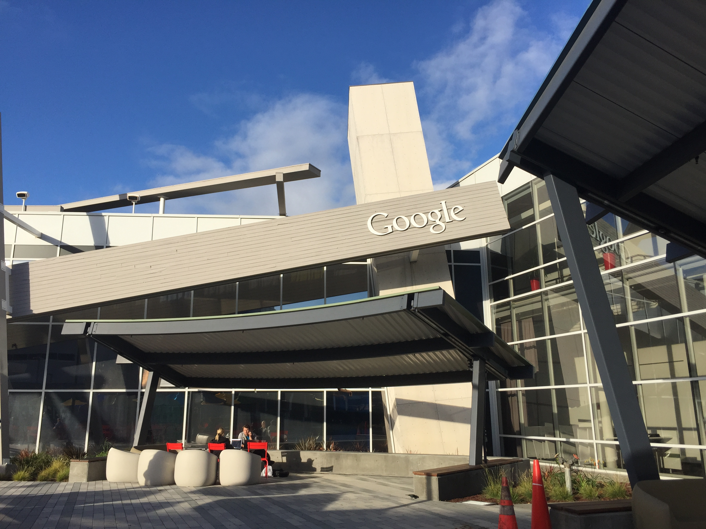

Digital Marketing
Since 2016, I've worked as a Web Producer on the Integrated Marketing and Communications Team at Massaschusetts General Hospital's Development Office. In this role, I produce marketing emails, including event invitations, newsletters, and solicitations, and provide reports on their performance.
I manage the Development Office website, including creating event and donation pages, updating the homepage and copy-editing articles. See samples of my writing here.
I provide extensive support for the community fundraising platform.
Journalism & Web Production
My work has been featured on SFGATE, MSN Money, Boston.com and beyond. I contributed to the Boston Globe's coverage of the 2013 Boston Marathon bombing, which won the 2014 Pulitzer Prize for Breaking News Reporting. I helped launch BostonGlobe.com.
Most recently, I ran SFGATE's coverage of business, technology, careers and cars.
I launched the Office Space series at the San Francisco Chronicle. See samples of the column below, or read more here.
Benefit Cosmetics office is playful in pink
Benefit Cosmetics' Financial District office is as pink, pretty and playful as the company's products. When you step off the elevator on the 20th floor, you see dolled up mannequins... (Continue)

Inside Pixar: jumbo characters, Steve Jobs touches in Emeryville
There's a touch of Pixar magic in every corner of the company's Emeryville headquarters. You can't walk too far around Pixar Animation Studios without spying a Pixar character... (Continue)

Google's campus feels as big as the Internet itself
Google's Mountain View headquarters is so big that employees can ride free bikes to get to the free cars. It's so spacious that there's a spaceship inside of one of the buildings... (Continue)